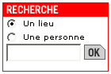

|
|
 |
|
|
Comment utiliser l'outil d'orientation?
| Comment utiliser le moteur de recherche? |
 |
Ce moteur vous offre plusieurs possibilités de recherche:
- Pour localiser un bureau ou une salle: sélectionnez "un lieu" et tapez le numéro du local, avec ou sans espace (p.ex., vous savez que le secrétariat de la Faculté Informatique et Communications occupe le local INM 168. Tapez "inm168" dans le moteur de recherche et vous dénicherez l'accueil administratif d'I&C).
- Pour situer une personne: vous pouvez le faire en composant son nom (même partiellement) ou son no CAMIPRO (ou SCIPER) et en optant pour "une personne"; si plusieurs occurrences se présentent, une liste s'affichera au-dessous de la carte.
- Pour trouver un service par son appellation usuelle ou générique: nous avons mis en place un système de recherche par "alias". Ainsi, certains termes usuels ou génériques peuvent être utilisés pour situer un service. Par exemple: "restaurant", "bibliothèque", "argent", "informatique", "poste", "transports", etc.
- Pour localiser une unité: composez l'acronyme de l'unité recherchée, sélectionnez l'option "un lieu". La carte vous dressera la liste des locaux normalement occupés par cette unité. La liste complète des unités est accessible ici.
ATTENTION, la fonction "recherche par unité" est encore en phase de test!
La recherche se base pour l'instant sur l'annuaire, c'est-à-dire que nous affichons les locaux occupés par une ou des personnes membres d'une unité particulière. Seuls les locaux occupés seront donc pris en compte pour l'instant!
Pour toute question à ce sujet, adressez-vous aux différents responsables de ces attributions dans les facultés.
|

|
| Le nom figurant sur la porte de mon bureau ne correspond pas tout à fait à celui de l'outil d'orientation. Pourquoi? |
De nouvelles règles de nommage des locaux ont été adoptées dans le courant de l'année 2002. Ces règles ont été choisies en tenant compte des noms "physiques" existants sur les portes. Il reste que ce système-là est plus ancien et il faudra sans doute attendre un certain temps avant qu'il y ait totale concordance pour les 10'000 locaux de l'école. En attendant, voici une explication simple des règles choisies:
Les nouvelles règles de nommage peuvent contenir 4 éléments (BZNL) dont la signification est:
- B pour Bâtiment (p.ex. MA pour le bâtiment de Matémathiques)
- Z pour Zone (p.ex. CH A pour la zone A du bâtiment de Chimie)
- N pour Niveau
- L pour Local.
La règle appliquée est un mélange de ces éléments, toujours dans l'ordre ci-dessus. Par principe, on inclut au moins le Bâtiment et le no de local (règle BL) afin que l'abréviation de l'espace soit suffisamment explicite.
Un bâtiment dont la règle de nommage est BZNL verra donc ses locaux "numérotés" de la manière suivante: Bâtiment, suivi de la Zone, suivi du Niveau, suivi du no du Local. Alors que les locaux d'un bâtiment avec la règle BL seront simplement codifiés Bâtiment suivi du no du Local.
En pratique, la règle la plus utilisée est BL (56 bâtiments actuellement [mars 2003]). Puis viennent les règles BNL (15 bâtiments) et BZNL (11 bâtiments). La règle BZL ne s'applique actuellement qu'au bâtiment PA.
Toute question à ce sujet peut être adressée à Roland Fazan, à la Direction Exploitation et Constructions.
|
|
| Certains lieux peuvent être recherchés via un terme usuel ou générique (p.ex. "restaurants"). Comment cela fonctionne-t-il? |
Il nous est possible de générer et d'enregistrer des "vues" spécifiques et de les associer à un ou plusieurs "alias", termes usuels ou génériques.
Par exemple, l'Agepoly peut être trouvée en tapant "agep", "agepoly", "association étudiants", "étudiants" ou encore "student" (sans oublier de sélectionner l'option "un lieu"...). Cette recherche appelle la vue no 75. Sur son site, l'Agepoly pourra donc placer un lien ainsi composé: http://plan.epfl.ch/?view=75
|
|
|
|
|